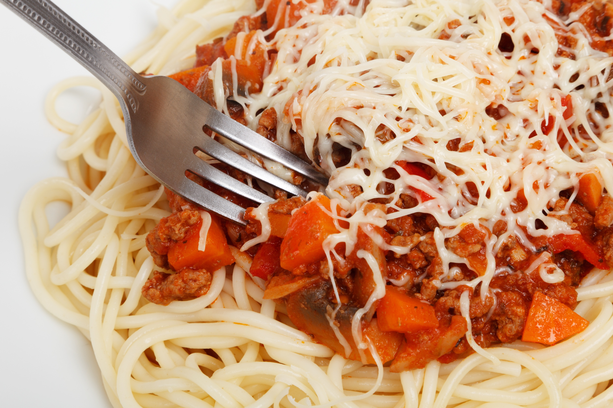

Retro Spaghetti

Description
The classic pasta dish enjoined by millions around the world.
Ingredients
- 1 pound ground beef
- 24 ounce tomato sauce
- 8 ounce spaghetti
Steps
- Add spaghetti to boiling water.
- Cook ground beef on skillet until brown.
- Add tomato sauce to meat and stir until completely mixed.
- Once noodles are cooked, drain and mix with the sauce and beef.
- Enjoy!